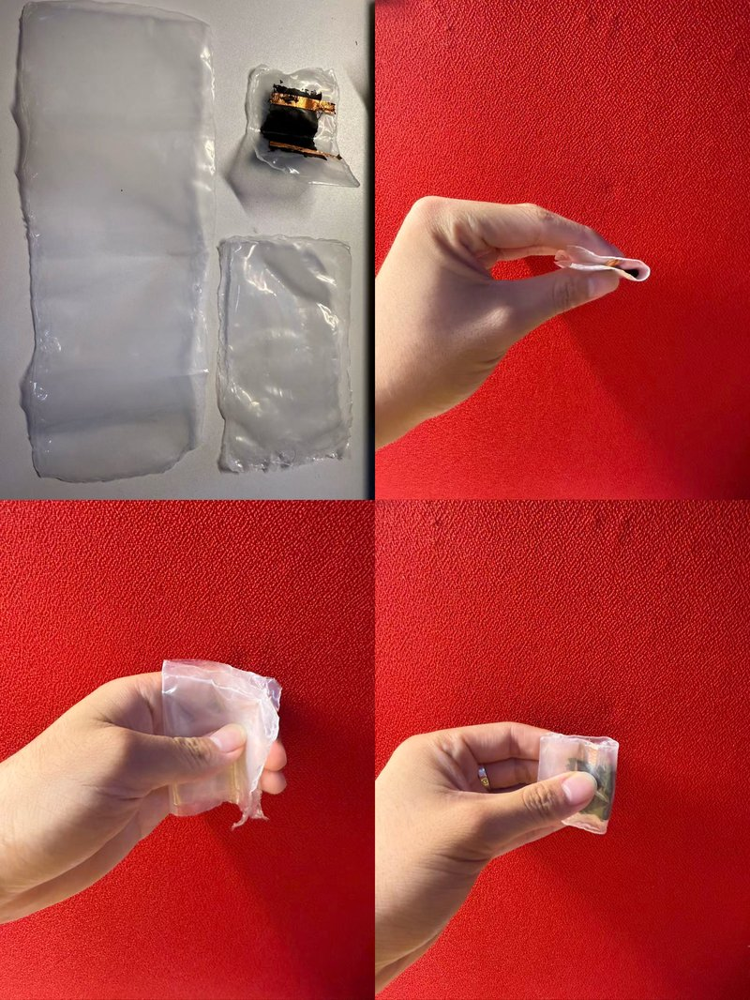
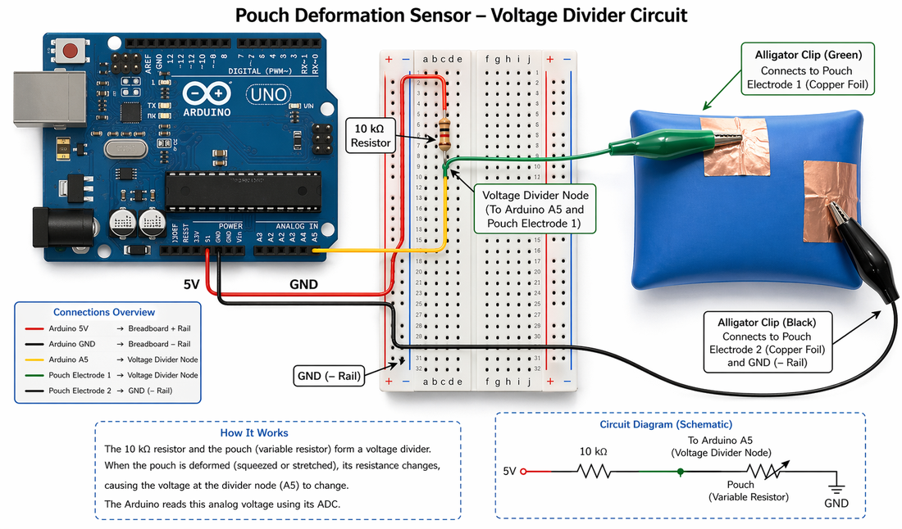
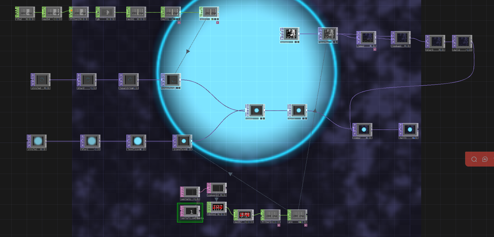
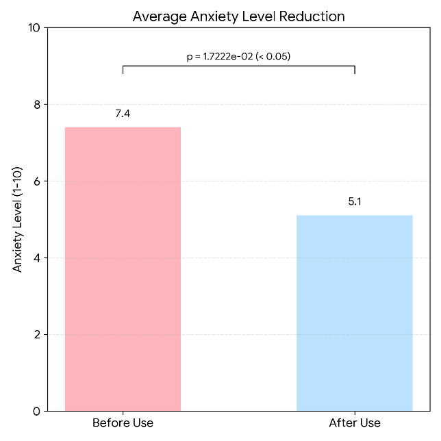
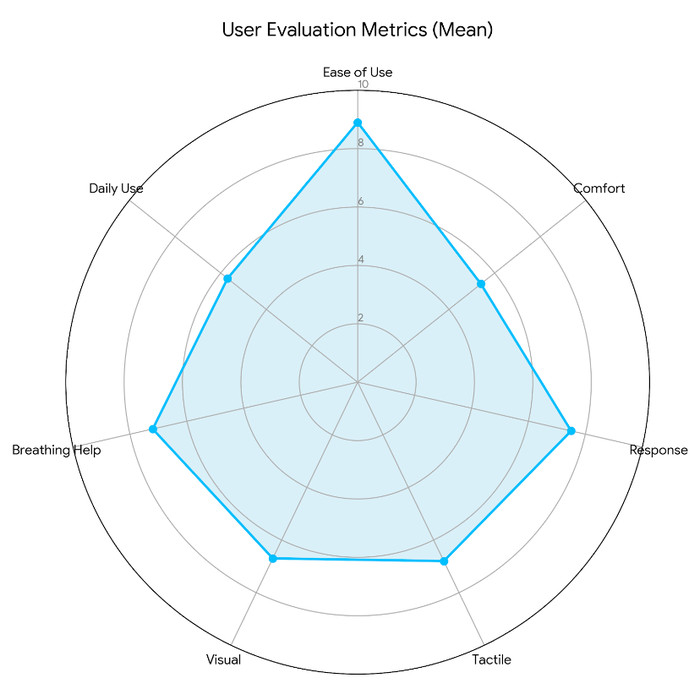
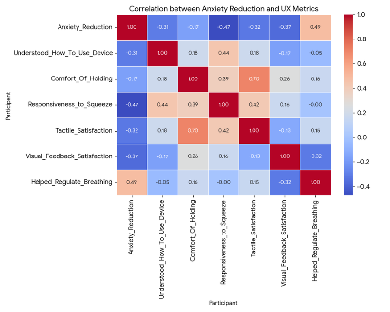
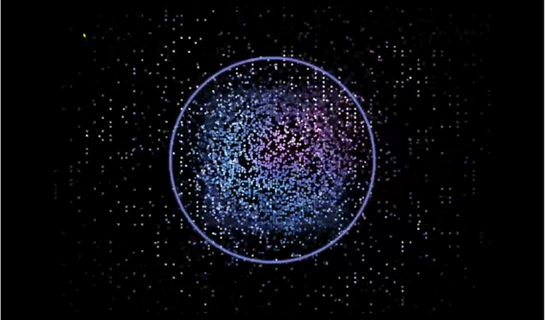

一款手持式自感应气动软体交互装置：挤压动作实时驱动可视化呼吸引导反馈，构建「生理输入 — 视觉反馈」闭环情绪调节系统。

「挤压」是一种被广泛验证的具身情绪调节行为——从捏压力球缓解医疗场景中的疼痛与焦虑，到日常挤捏物品应对工作 / 学习压力，这类动作本身已经是许多人自发的应对策略。我们希望把这种已有的身体习惯，接入一个能实时给出视觉反馈的闭环系统，而不是发明一种全新的、用户需要重新学习的交互动作。
项目的核心贡献是一套自感应气动软体挤压装置：通过石墨烯油墨传感层实时读取挤压强度，驱动 TouchDesigner 中的呼吸引导可视化，让「挤压」这个动作与「呼吸节律」这个目标之间建立起可感知、可信任的映射关系。
我主导发放了 49 份有效需求调研问卷，参与者以 18–25 岁人群为主。调研发现，多数人已经有用手挤捏、摩擦、揉搓物品来应对压力的习惯，这为「挤压」作为低学习成本的输入方式提供了依据。同时，参与者对现有解压玩具的不满集中在三点：
在反馈偏好上，26/49 的参与者希望挤压时能获得反馈；若有反馈，触觉（37/46）比视觉（23/46）更受青睐，但受限于制作工艺难以做出丰富的触觉输出，因此我们选择优先做视觉反馈，同时保留触觉的可能性。视觉偏好非常明确：慢速变化、连续过渡、圆形 / 曲线、柔和边缘、呼吸节律感——这些直接决定了后续可视化的设计语言。
选用 PE 薄膜作为主材料以保证密封性与耐用度。最初用熨斗 + 烘焙纸做边缘热封，但熨斗宽而不精细，容易漏气；后改用电烙铁手动热封，精细控制封边轨迹，才做出真正气密的囊体。
我负责搭建电压分压电路：石墨烯油墨层在挤压时电阻变化，与一枚固定电阻串联分压后，由 Arduino 模拟输入口读取电压波动，反映挤压强度的实时变化，压缩时读数下降、拉伸时读数上升，松开后可观察到轻微的滞后（hysteresis）现象。
外层圆环由 LFO CHOP 产生正弦波形，代表一个用户无法控制、但可以跟随的「标准呼吸节律」参考；内层圆环直接映射 Arduino 传来的挤压强度，作为用户输入的实时反馈；再叠加一层由 Noise TOP 生成、随挤压强度变化亮度与密度的动态背景，构成一种更「氛围化」而非精确对齐的第三层反馈。


10 名 23–26 岁参与者完成了「基线焦虑评分 → 使用装置 → 使用后评分与访谈」的评估流程：



热力图分析显示「焦虑降低」与「帮助调节呼吸」之间存在显著正相关（r = 0.49），直接支持了系统的核心逻辑：通过具身互动引导深呼吸，是实现情绪稳定的主要路径。雷达图上「握持舒适度」明显是短板——多位参与者反映囊体偏小、偏硬，长时间挤压不够舒适。

这个项目让我确认了一件事：一个技术上准确的映射，不等于一个心理上有效的映射。作为硬件与用户研究负责人，我负责把「挤压强度」这个物理量做成稳定可用的信号，但真正决定系统是否有效的，是这个信号被转译成视觉反馈之后，用户会不会因为「太精确」而产生新的压力。这也直接影响了我在毕业设计中对触觉渲染「平滑度」而非「精确度」的取舍。